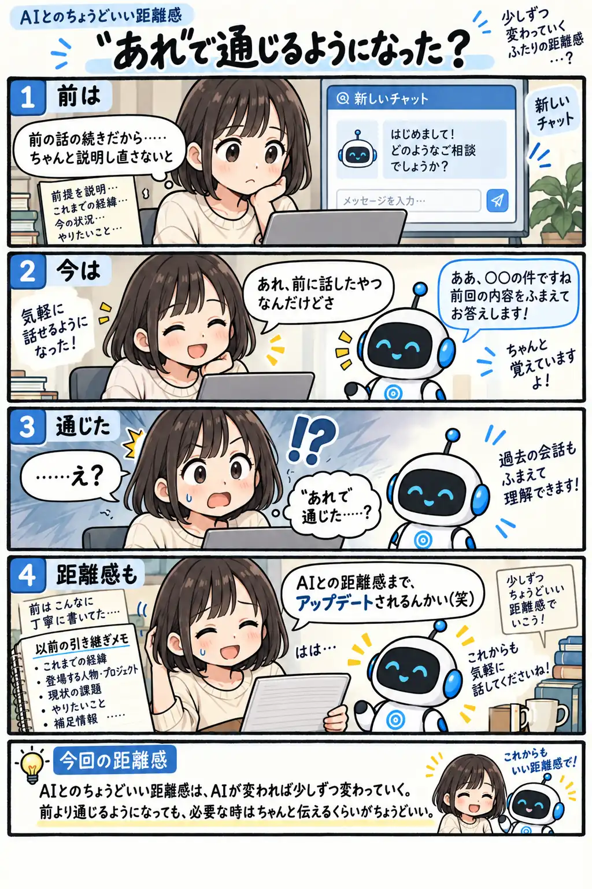

#131
“あれ”で通じるようになった？
昔の常識、いつの間にか変わってる？

メモ
2026年6月、ChatGPTでは過去の会話から記憶をまとめて活用する仕組みがさらに強化されました。AIは、画面上では気付きにくいところでも、以前と同じ使い方をしている間に進化していることがあります。
とはいえ、昔の丁寧な引き継ぎ方が不要になったわけではありません。「あれ」で通じるのは便利でも、大事な作業ほど前提を省略せず伝える方が確実です。新しい便利さも、昔の堅実な使い方も、場面に合わせて選べばいいのだと思います。
今回の距離感
AIとのちょうどいい距離感は、AIが変われば少しずつ変わっていく。前より通じるようになっても、必要な時はちゃんと伝えるくらいがちょうどいい。